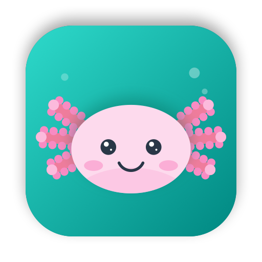
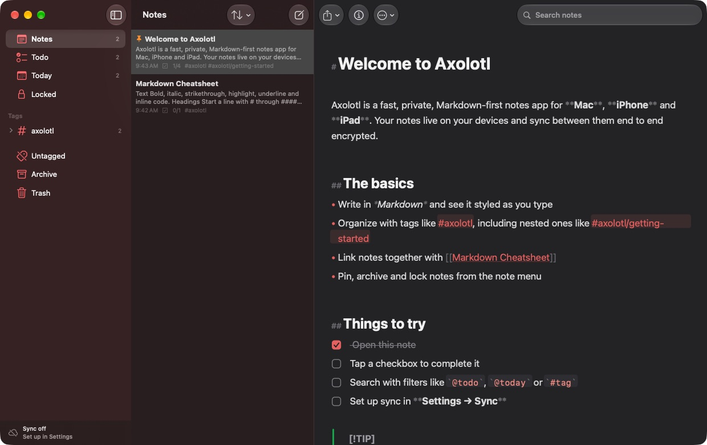
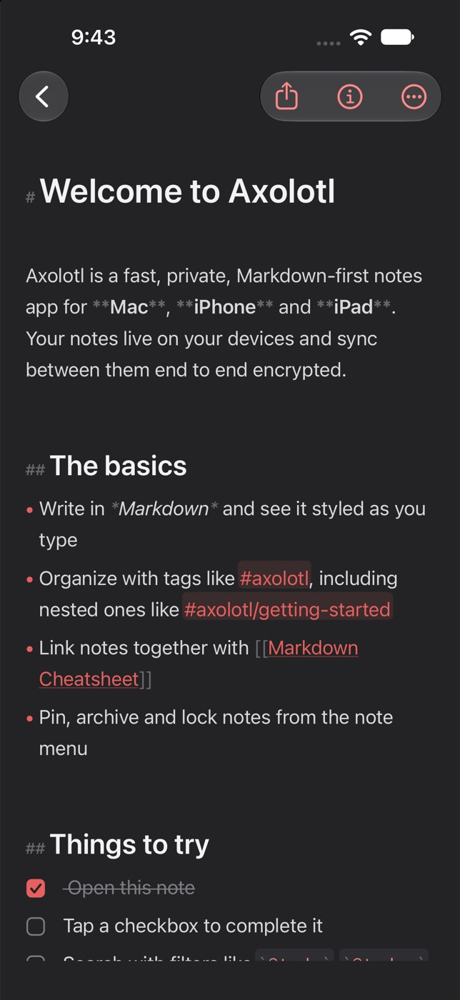
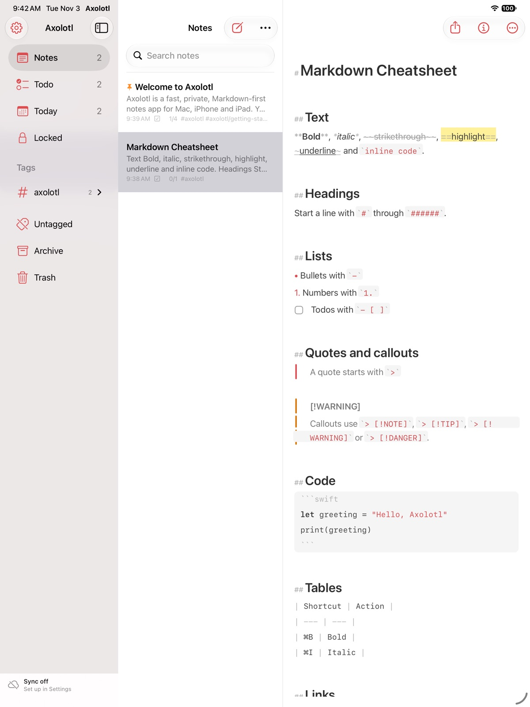

Axolotl is a Markdown-first notes app for Mac, iPhone and iPad. It's fast and focused, with tags, todos and linked notes, and your notes sync between devices end-to-end encrypted.


Write in plain Markdown, see it styled as you type, and keep it organized without any extra effort.
Headings, bold, italic, highlights, callouts, tables, code blocks with syntax colors, styled in place while you type.
Type #work/projects anywhere to organize. Tags get icons, can be pinned, renamed and nested as deep as you like.
[[Wiki links]] with autocomplete, plus backlinks and outgoing links in the info panel.
Real checkboxes, progress in the note list, and a Todo section that collects every unfinished task.
Phrases, exclusions, tags and filters like @todo, @today, @images and @date(>2025-01-01). Text in photos is searchable too.
Encrypt individual notes with AES-256 and unlock with Face ID or Touch ID, or lock the whole app.
Red Graphite, Dracula, Nord, Solarized, Tokyo Night, Gruvbox, Catppuccin, Rosé Pine and more, plus fonts, sizes and line width.
Markdown, TextBundle, HTML, PDF, RTF, Word and plain text, or export your whole library as a zip. Imports from Bear and other Markdown apps.
Paste, drop or pick photos and files. Sketch with Apple Pencil and scan documents on iPhone and iPad.
Every change is kept as a revision. Browse older versions of a note and restore one with a tap.
Quick Open with ⌘O, formatting shortcuts, list continuation, Tab to indent, and separate note windows on the Mac.
Keep the line you're writing centered, hide the sidebar and list, and give your words all the space.

Search operators work anywhere: in the search field, in Quick Open and in axolotl:// links.
"exact phrase"-word#work!#work-#archivea OR b
@todo@done@today@yesterday@last7days@date(>2025-06-01)
@images@files@code@locked@pinned@untagged
@wikilinks@backlinks@ocr@title@untitled@empty
x-callback-url actions for Shortcuts and automationAxolotl has its own local-first sync engine. Every device keeps a complete copy of your notes, works offline, and syncs when it can.
Free and open source under the MIT license. Builds are attached to every GitHub release.
macOS 14 Sonoma or later · Apple silicon & Intel
The build isn't notarized by Apple yet. After moving Axolotl to Applications, right-click it and choose Open, then Open again. Or run:
xattr -dr com.apple.quarantine /Applications/Axolotl.app
iOS & iPadOS 17 or later
Apple only allows App Store or developer-signed installs on iPhone and iPad, so the IPA is unsigned for sideloading:
AltStore or SideStore: tap the button above, or add the source https://nearbycoder.github.io/axolotl/altstore.json.
Sideloadly: drag the .ipa in and sign with your Apple ID.
From source: open Axolotl.xcodeproj in Xcode and run the Axolotl-iOS scheme on your device.
Optional · Node 22+ or Docker · any host
git clone https://github.com/nearbycoder/axolotl cd axolotl/server docker compose up -d # or: node server.mjs
Put the relay behind HTTPS (Caddy, Cloudflare Tunnel, Tailscale…), then enter its URL in Settings → Sync → Sync server on each device. Set REGISTRATION=closed once your vault exists. The relay only ever stores encrypted data.